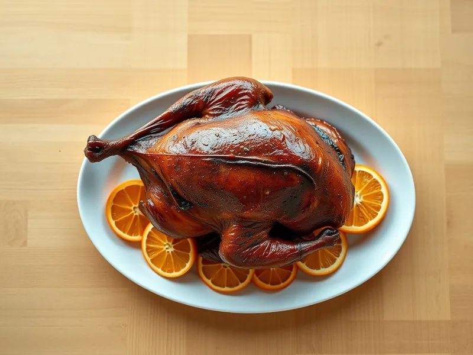

Утка с апельсинами в духовке
Запечённая целиком утка с хрустящей кожей в медово-апельсиновой глазури
180 мин6 порц.674 ккал на порциюБ 34 · Ж 53 · У 15Европейская кухня
Открыть в приложении: порции, таймеры, список покупок
Продукты на 6 порц.
- Утка1 шт
- Апельсин3 шт
- Мёд2 ст. л.
- Соевый соус2 ст. л.
- Чеснок3 зуб.
- Имбирь10 г
- Соль2,5 ч. л.
- Перец чёрный молотый1 ч. л.
- Вода1 стак.
Как готовить
- Срежьте с утки лишний жир у шеи и хвоста, обсушите полотенцем. Наколите кожу вилкой, не задевая мяса, чтобы вытопился жир.
- Натрите утку снаружи и внутри солью, перцем и давленым чесноком, оставьте на 30 минут.
- Нарежьте 2 апельсина дольками с кожурой и вложите внутрь утки, разрез сколите зубочистками.
- Положите утку на решётку над противнем, налейте в противень горячую воду. Запекайте при 180 °C (средний жар) 90 минут, поливая вытопившимся жиром каждые 30 минут.
- Для глазури смешайте сок третьего апельсина, мёд, соевый соус и тёртый имбирь, уварите на среднем огне 5 минут до сиропа.
- Смажьте утку глазурью и запекайте при 200 °C (сильный жар) ещё 20 минут, смазав её ещё раз, до блестящей тёмно-золотистой корочки. Сок при проколе бедра должен быть прозрачным.
- Дайте утке постоять 15 минут и разрежьте на порции.
Совет. Мёд подгорает быстро, поэтому глазурь наносите только в последние 20 минут запекания.